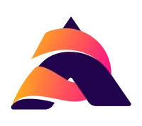
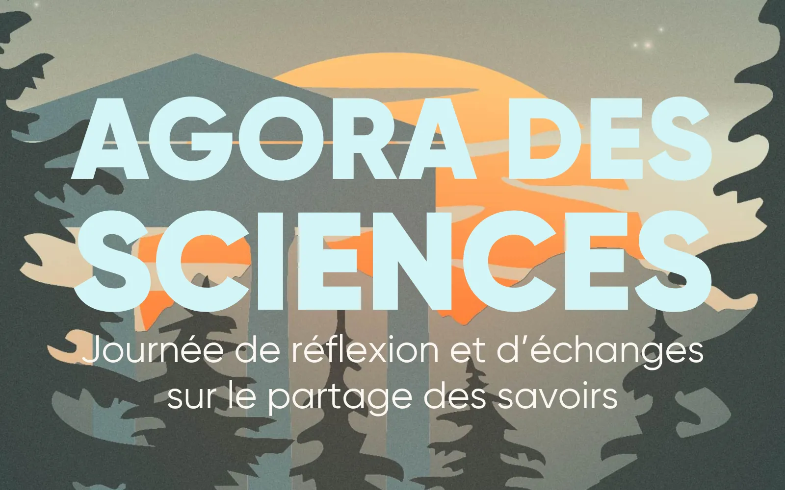
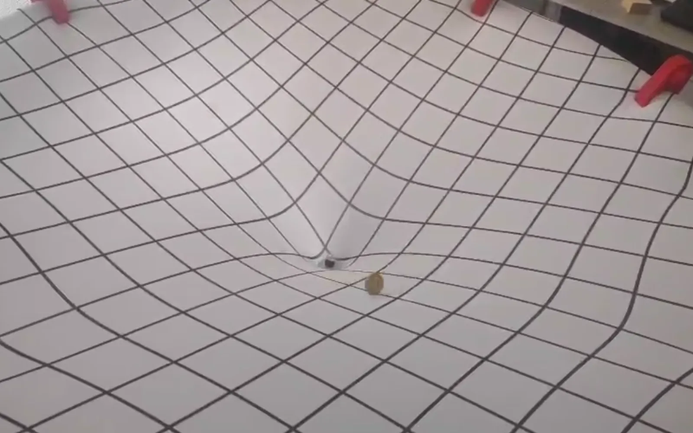
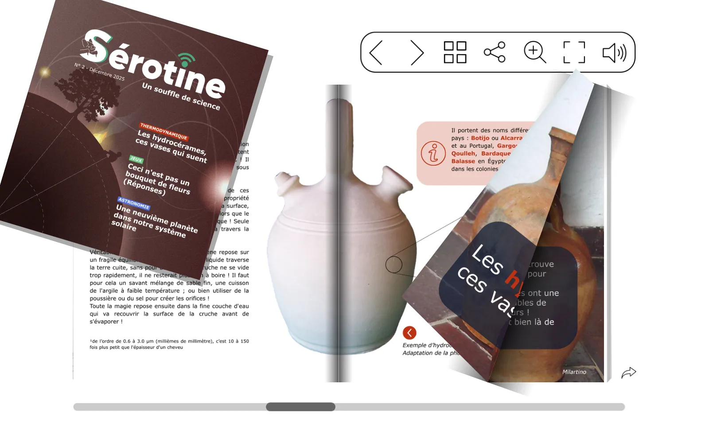
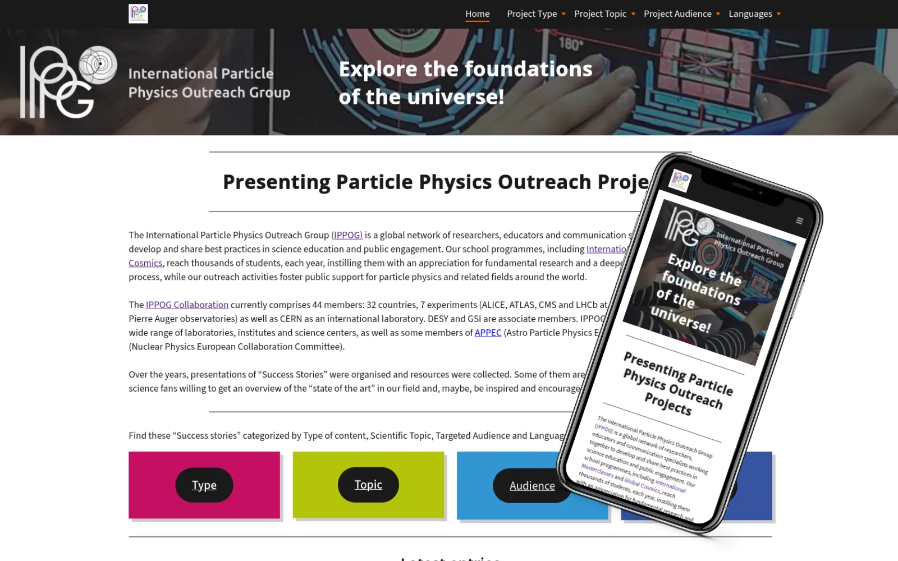
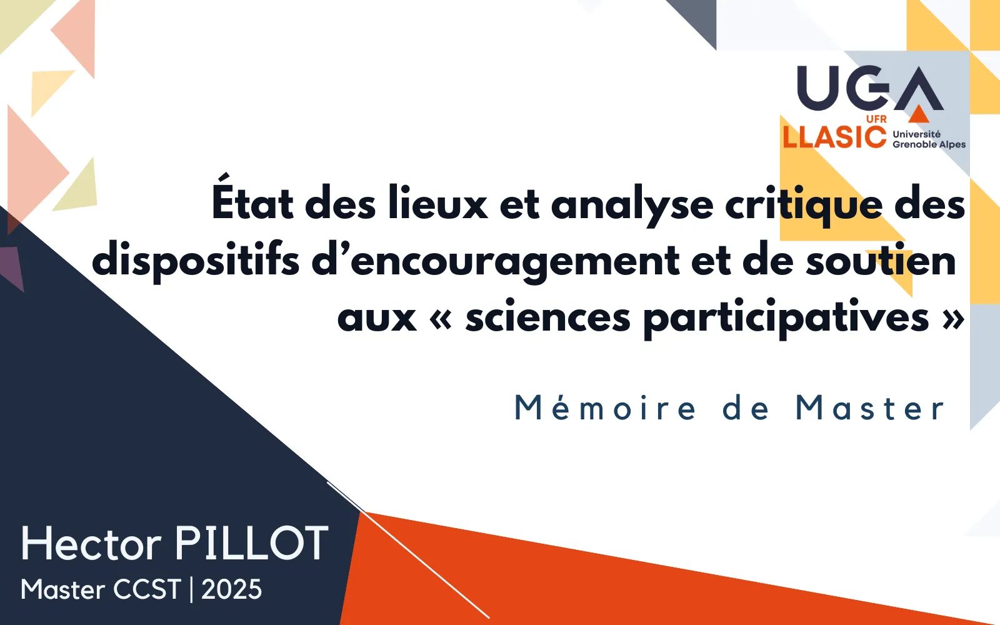
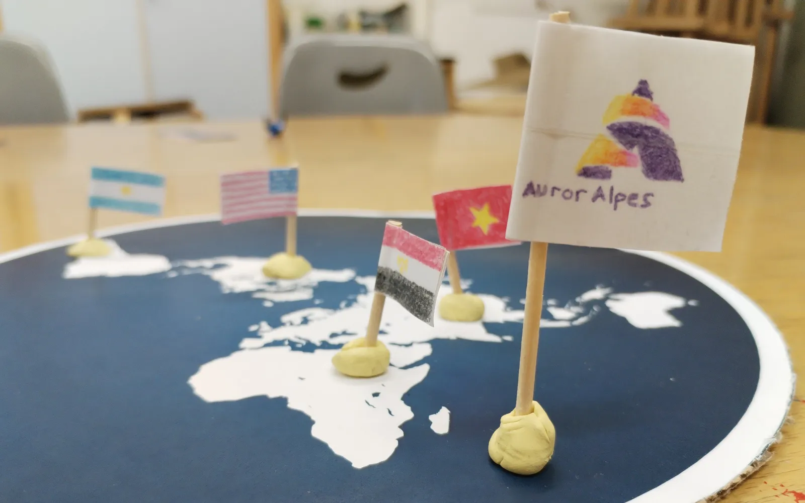
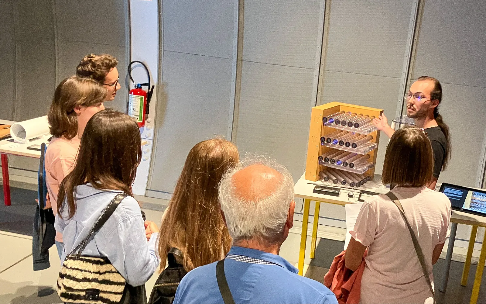
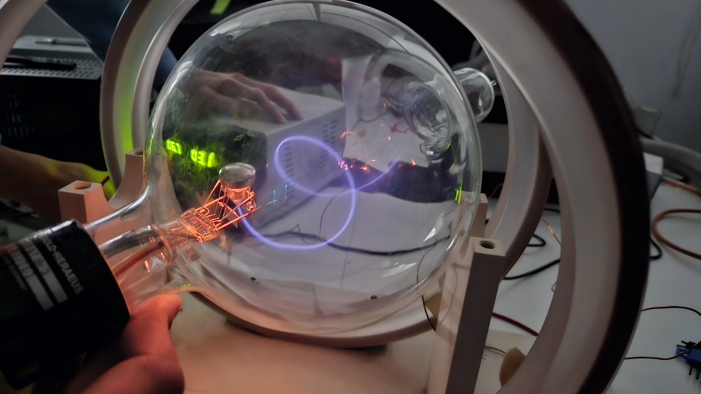

Mes projets de médiation et de communication.
Une sélection de différents projets de rédaction scientifique, de développement d'ateliers, d'animations et bien d'autres.
Filtrez par thématique.

Découvrez le catalogue d'animations d'AurorAlpes →
Agora des Sciences
Organisation d'une journée pour réunir les acteurs et actrices de la médiation scientifique, afin de réfléchir et échanger sur les manières de partager les savoirs en confrontant nos idées et points de vue.

Toile de relativité
La Toile de relativité est un dispositif de médiation autour de la relativité générale. Il s'agit d'une toile en Lycra qui se déforme sous l'application d'un poids, permettant une analogie avec l'espace-temps décrit par la…

Webzine de Vulgarisation : Sérotine
Sérotine est un web-magazine de vulgarisation scientifique abordant des sujets variés et peu partagés. Il encourage une ouverture vers l’esprit critique sur un ton léger ou décalé. Il a pour objectif de s’amuser des sciences tout…

Portail de ressources web IPPOG
Le « portail de ressources » est créé en 2025 par IPPOG, la collaboration internationale de vulgarisation et communication scientifique en physique des particules, à la demande de la communauté de physique des hautes énergies…

Mémoire de recherche : Recherche participative
Depuis plusieurs années, maintenant, on remarque la démocratisation des termes de « science participative » et « recherche participatives », au point où ces mots semblent faire partie du vocabulaire commun. Ce mémoire a pour but…

Malette du petit sceptique
La mallette du petit sceptique est un serious game. Le but de l'animation est d'appliquer la méthode scientifique à la théorie de la Terre plate.

Développement de médiation au CERN
Stage au sein de l'équipe exposition du CERN Science Gateway, le centre de science et d'éducation du CERN. J'y ai conçu de courtes démonstrations pour les expositions et formé les guides à leur réalisation.

Village de la Météorologie de l'espace
Participation au village de la météorologie de l'espace avec l'association AurorAlpes pendant la European Space Weather Week (ESWW24), à destination du grand public et de classes scolaires.